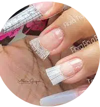
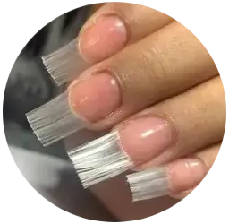
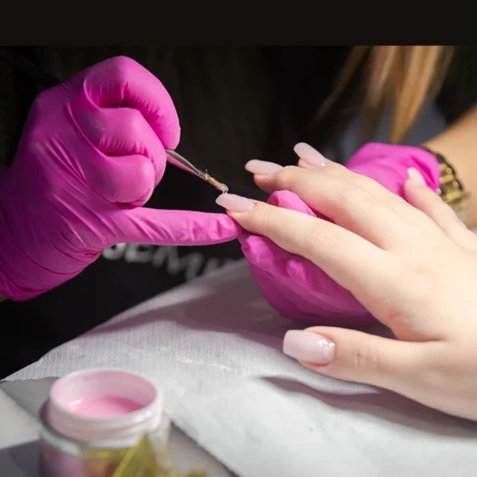
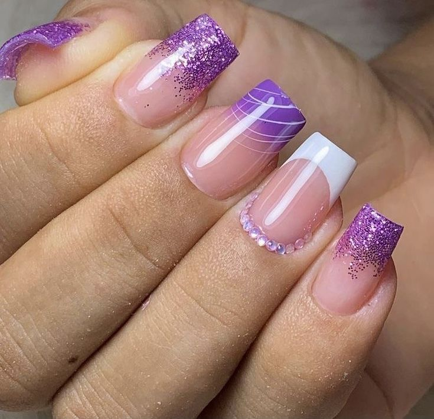

Conquiste sua independencia financeira fazendo unhas incríveis, e fature até 10 mil reais por mês!
Aprenda o passo a passo
para fazer unhas incriveis, mudar
de vida e surpreender suas
clientes.
Para quem é esse curso?
Para quem quer conquistar a sua independencia financeira, atraves dos seus talentos e criatividade. E tambem para você que:
- Quer começar nas unhas do jeito certo.
- Já é Nail Designer mas quer virar a chave e faturar mais.
- Quer conquistar seu espaço e ser reconhecida na região.
- Quer realizar sonhos e levar autoestima para suas clientes.
- Que não depende de ninguem para nada! Este curso é para mim
O que voçê vai aprender comigo
Um curso de Nail Designer ensina técnicas de nail art, aplicação de esmaltes, gel e acrílico, além de conceitos de design, higiene e segurança. Também aborda marketing, negócios e práticas para desenvolver habilidades criativas e profissionais.
-

APLICAÇÃO DE EXTENSOR
técnica exclusiva de durabilidade
A Aplicação de Extensor é ensinada para alongar as unhas com materiais como gel, acrílico ou tips. O extensor é colocado sobre a unha natural ou moldes, proporcionando um formato mais longo e elegante. A técnica exclusiva de durabilidade usa produtos de alta qualidade e aplicação cuidadosa, garantindo que o alongamento dure por semanas sem lascar.
-

TUDO SOBRE FIBRA
+dicas
No curso de Nail Designer, o uso de Fibras como fibra de vidro ou seda é ensinado para alongamento e reforço das unhas. As fibras são aplicadas sobre a unha natural ou moldes e cobertas com resina ou gel. Dicas importantes incluem escolher a fibra certa e garantir uma aplicação uniforme, evitando bolhas. A técnica oferece um visual sofisticado, durável e leve, sendo ideal para quem busca unhas naturais e resistentes.
-

CONTROLE DE GEL
prática
No curso de nail designer ensina a aplicação precisa de gel para alongamento ou esmaltação. O aluno aprende a controlar a quantidade de gel, evitando excessos e garantindo um acabamento uniforme. A técnica envolve a construção de camadas finas, que são curadas sob luz UV ou LED. A prática também ensina a modelar a unha, mantendo o design natural e durável. A habilidade no controle de gel é essencial para garantir um resultado final perfeito e resistente.
-

ESMALTAÇÃO EM GEL
prática
A esmaltação em gel envolve a aplicação de base, cor e top coat, curados sob lâmpada UV ou LED. O processo garante um acabamento durável, brilhante e sem imperfeições, com maior resistência ao desgaste. Ideal para quem busca unhas impecáveis e de longa duração. A técnica também permite maior flexibilidade para criar designs sofisticados, como francesinha ou ombré. Além disso, proporciona secagem rápida e evita o risco de manchas ou bolhas.
-
.webp)
FORMATOS
quadrada, stiletto, bailarina, almond
Quadrada: Lados retos e ponta plana, ideal para unhas fortes e naturais, proporcionando um visual moderno e prático. Stiletto: Ponta fina e afiada, ideal para quem busca um look ousado, dramático e elegante. Bailarina: Ponta afunilada e lateral reta, criando um visual alongado e sofisticado, perfeito para nail art. Almond: Ponta suave e arredondada, conferindo um visual feminino, delicado e alongado.
O que nossos aprendiz dizem
-
luiza S.
Curso excelente! Aprendi técnicas avançadas de alongamento com gel e fibra de vidro. A prática foi fundamental, e agora me sinto preparada para atender minhas clientes com qualidade. Super recomendo!
-
.webp)
Raphaella C.
Amei o curso! As técnicas de nail art foram incríveis, e a professora foi muito didática. Agora me sinto mais confiante para criar designs criativos para minhas clientes!
-
.webp )
Camile A.
O curso me ajudou a dominar as técnicas de alongamento de unhas e cuidados essenciais. As aulas práticas e o apoio da professora foram essenciais para minha evolução.
-

Raiany M.
Ótimo curso! Aprendi a usar os produtos corretamente e a fazer unhas duráveis e bonitas. Me sinto pronta para começar a atender minhas próprias clientes!
-
.webp)
Heloisa P.
Melhor curso que já fiz! As aulas práticas e os ensinamentos sobre diferentes tipos de gel me ajudaram a melhorar meu trabalho. Agora me sinto mais preparada para atender clientes com qualidade!
Extra + Bonus !
- Certificado
- Suporte individual pós curso
- Teoria e prática
- Apostila super explicativa
- Aula vip presencial